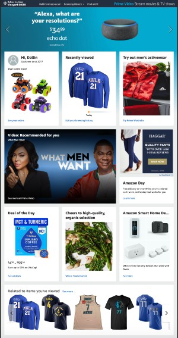

Rule of Thirds
Amazonamazon.com 
The images used on Amazon's homepage exemplifies the Rule of Third's principle. Amazon has a lot to offer people that are coming to their website and when the user is in mobile they have to tell a story with images and they are all fit to their windows perfectly using the Rule of Third's principle.
Proximity
Behancebehance.com
Behance uses proximity to indicate to the user what categories they can sift through. At the top of the page they have a lot of tiles next to each other in a scrollable container to indicate that it is separate from the content down below.
Fitt's Law
Spotifyspotify.com
Spotify uses Fitt's Law to make their call to action more prominent on the page. In order to see more content on the mobile view you need to scroll. I think that was a deliberate decision knowing that their target audience is probably coming to the page looking for info.